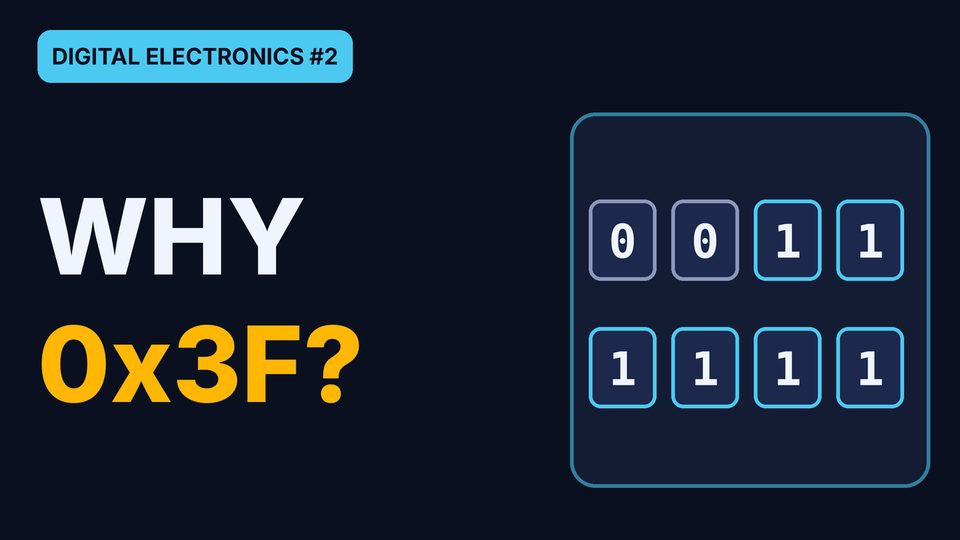

Why does hexadecimal even exist?
Your laptop only understands 0 and 1, yet it shows you errors like 0x0000007B. These notes show that hex is not a new kind of number at all. It is binary, written so humans can read it.

In 30 seconds
- Every number system follows one rule: each position is worth “base” times the one on its right. Decimal uses 10, binary uses 2.
- Long binary strings are easy for machines and terrible for people. Decimal can’t be a shorthand, because 10 is not a power of 2.
- One hex digit = exactly four bits, so one byte is always two hex digits. Converting is just swapping groups of four: 0011 1111 = 0x3F.
01What a number system really is
Look at 347. It is not just the digits 3, 4 and 7 side by side. It means three hundreds, four tens and seven ones. Each position is worth ten times the position to its right: ones, tens, hundreds, thousands. That is why we call it base 10, and why it has exactly ten symbols, 0 to 9. Why ten? Mostly because humans have ten fingers.
A computer has no fingers. It has switches, and a switch has two states. So it counts in base 2, binary, with only the symbols 0 and 1. The rule is identical; only the multiplier changes. Binary places are worth 1, 2, 4, 8, 16 and so on, each double the one on its right.
Decimal · 347
Binary · 1011
Counting works the same way too. In binary you count 0, 1, 10, 11, 100. Each time a position runs out of symbols it resets to 0 and carries one into the next position, exactly like 9 + 1 gives 10 in decimal.
| Position (from right) | 4 | 3 | 2 | 1 | 0 |
|---|---|---|---|---|---|
| Base 10 place value | 10,000 | 1,000 | 100 | 10 | 1 |
| Base 2 place value | 16 | 8 | 4 | 2 | 1 |
| Base 16 place value | 65,536 | 4,096 | 256 | 16 | 1 |
Hexadecimal is nothing new: it is the same rule with base 16.
02Perfect for machines, terrible for humans
Your Wi-Fi router’s address, 192.168.0.1, is stored inside the computer as 32 bits: 11000000 10101000 00000000 00000001. Now imagine reading that to a friend over the phone, or copying it into an exam answer. Miss one bit and you have a completely different address.
Long strings of 0s and 1s are hard to read, hard to remember and very easy to get wrong. Engineers stare at registers, memory dumps and waveforms full of them for hours, so they need a shorthand for binary.
Why not just use decimal?
255 is certainly shorter than 11111111. The problem is that 10 is not a power of 2, so a decimal digit does not stand for any fixed group of bits. Which bits does the “2” in 255 stand for? You can’t tell. To see the bits you must do a full conversion, dividing by 2 again and again.
What we want is a shorthand where every digit maps to an exact group of bits, so you can read the bits without any calculation. That only works when the base is a power of 2: 2, 4, 8, 16 …
03One hex digit = four bits
Group the bits in fours. Four bits give 24 = 16 patterns, from 0000 to 1111. To give each pattern a single symbol we need 16 symbols. The digits 0–9 cover the first ten, and for the last six we borrow letters: A = 10, B = 11, C = 12, D = 13, E = 14, F = 15. That is hexadecimal, or hex for short.
| Dec | Binary | Hex | Dec | Binary | Hex |
|---|---|---|---|---|---|
| 0 | 0000 | 0 | 8 | 1000 | 8 |
| 1 | 0001 | 1 | 9 | 1001 | 9 |
| 2 | 0010 | 2 | 10 | 1010 | A |
| 3 | 0011 | 3 | 11 | 1011 | B |
| 4 | 0100 | 4 | 12 | 1100 | C |
| 5 | 0101 | 5 | 13 | 1101 | D |
| 6 | 0110 | 6 | 14 | 1110 | E |
| 7 | 0111 | 7 | 15 | 1111 | F |
Now converting is just swapping groups. Take the byte 00111111, split it into two groups of four, and read each group: 0011 is 3 and 1111 is 15, which is F. So the byte is 3F. Programmers write it as 0x3F; the 0x prefix simply means “this number is in hex”.
It works backwards too. FF is 1111 1111, eight ones, which is 255, the largest 8-bit value. A byte always runs from 00 to FF, so one byte is always exactly two hex digits. The laptop error from the start ended in 7B: 7 is 0111 and B (11) is 1011, so 0x7B = 0111 1011.
And that Wi-Fi address? 32 bits become just eight hex digits: C0 A8 00 01. Same information, a quarter of the length, and you can still see every bit.
Try it: build a byte
04Where you’ll see hex, and why octal lost
Once you know hex, you see it everywhere:
- Colour codes. #FF8800 is three bytes: red FF (255, full), green 88 (136, some), blue 00 (none). Together they make orange.
- Memory addresses in C programs and debuggers, such as 0x7FFE0010.
- MAC addresses: 48 bits written as 12 hex digits, such as 3C:22:FB:0A:41:9E.
- Error codes: Windows shows 0x7B padded to eight hex digits, 0x0000007B, which is exactly 32 bits.
What about octal?
Octal is base 8. It groups bits in threes, because three bits give 23 = 8 patterns, 0 to 7. You still meet it in Linux file permissions, where each digit is three permission bits:
| chmod 755 | Bits | Meaning |
|---|---|---|
| 7 | 111 | read, write, execute (owner) |
| 5 | 101 | read, execute (group) |
| 5 | 101 | read, execute (others) |
So why did hex win? Modern computers work in bytes of 8 bits. Eight splits perfectly into two groups of four, so a byte is exactly two hex digits. Eight does not split evenly into threes: you get 3 + 3 + 2, with a group left over.
| Decimal | Binary | Octal | Hex |
|---|---|---|---|
| 7 | 0000 0111 | 7 | 07 |
| 10 | 0000 1010 | 12 | 0A |
| 63 | 0011 1111 | 77 | 3F |
| 123 | 0111 1011 | 173 | 7B |
| 172 | 1010 1100 | 254 | AC |
| 255 | 1111 1111 | 377 | FF |
05Key terms
- Base (radix)
- The number of symbols a system uses, and the multiplier between neighbouring positions.
- Place value
- What a position is worth: baseposition, counting from 0 at the right.
- Binary
- Base 2, symbols 0 and 1. Place values 1, 2, 4, 8, 16 …
- Bit
- One binary digit.
- Nibble
- A group of 4 bits; exactly one hex digit.
- Byte
- 8 bits; exactly two hex digits, 00 to FF (0 to 255).
- Hexadecimal
- Base 16, symbols 0–9 and A–F (A = 10 … F = 15).
- 0x prefix
- Marks a number as hex in code: 0x3F = 63. Also written 3FH or (3F)16.
- Octal
- Base 8, symbols 0–7; one digit = 3 bits. Still used in Linux permissions.
- MSB / LSB
- Most and least significant bit: the leftmost and rightmost bit. Group from the LSB when converting.
- Carry
- When a position runs out of symbols it resets to 0 and adds 1 to the next position.
06Practice check
1. How many bits does one hex digit represent?
- 2
- 3
- 4
- 8
Show answer
C, 4. 16 symbols need exactly four bits, because 24 = 16.2. Write 1010 1100 in hex.
- AC
- CA
- 172
- A12
Show answer
A, AC. 1010 = 10 = A and 1100 = 12 = C. 172 is the decimal value, not the hex.3. Why do engineers prefer hex over octal for bytes?
- Octal has more symbols
- One byte is exactly two hex digits
- Hex is faster for the computer
- Octal can’t show 255
Show answer
B. 8 bits split into two clean groups of four. The computer doesn’t care; hex is purely for humans. (Octal can show 255: it is 377.)Viva: Why can’t decimal be used as a shorthand for binary?
Show answer
Because 10 is not a power of 2, a decimal digit doesn’t correspond to a fixed group of bits. You need a full conversion to see the bits. In hex (16 = 24) every digit is exactly four bits.Viva: Convert 0xC0 to binary and decimal.